烈烈夏日，
小伙伴们都回家避暑了吗？
No！
上周星火和北航头马的小伙伴们
来meeting联谊啦
首先
来一发星火现任主席刘桥大哥与
北航前前任主席博文
紧紧相握
的双
手
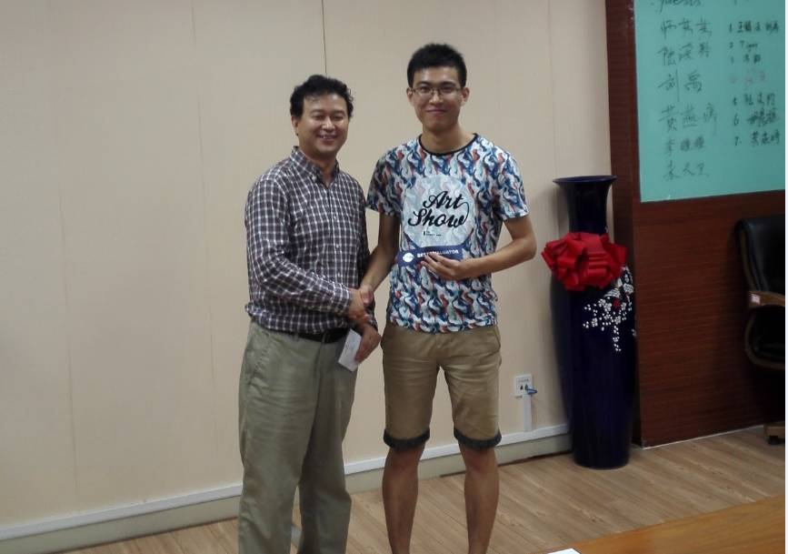

首先，来自广州的宾客刘禹与王娟就能不能对机器人倾注感情展开讨论。刘禹认为随着相处时间增加，机器人会对人类产生感情，人类也应当付出感情。王娟用机器人没有泄压、皮肤电等情绪相关活动指标加以反驳。辩论最后，刘禹放出大招，要娶机器人当妻子，让对手“无语”了。
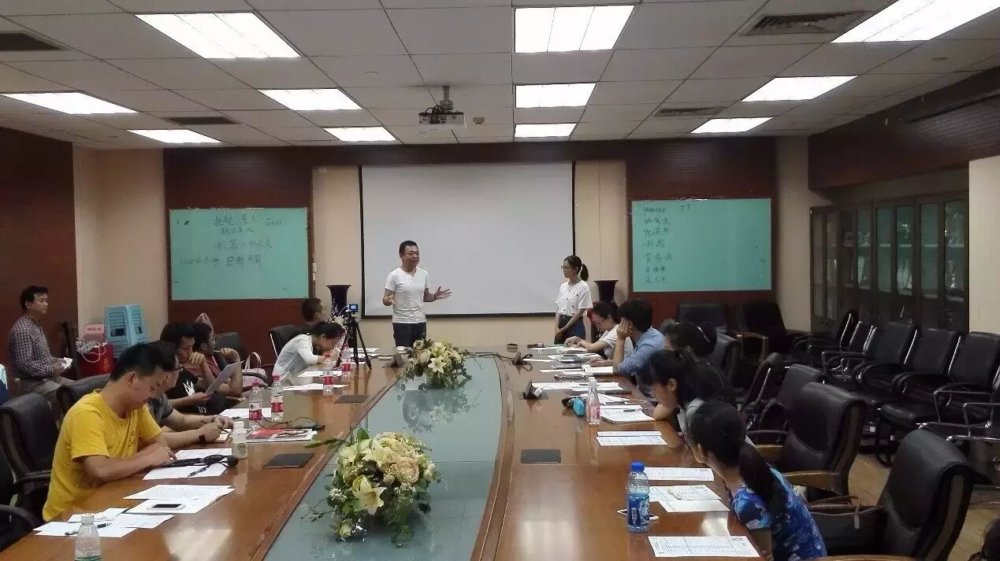
其次，tiger畅想30年后，家里有个机器人，能在受伤的时候安慰自己，在有需要的时候帮组自己，在有危险的时候挺身而出，wow,满满的少女心，有木有？
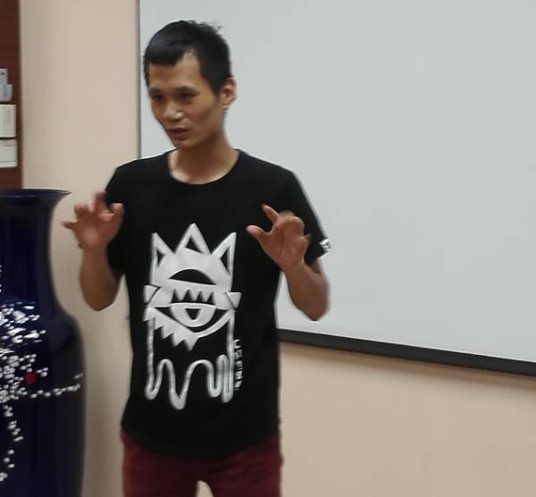
接下来，冯凯变成机器人啦！他要轻轻地告诉人类：我是有知觉的，你们要在乎我哟！我很想跟你们做朋友（羞羞哒）~
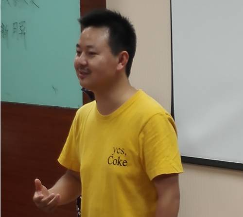
然而，周平表达说自己才不想变成机器人啦。机器人没有意识，它们是为人类服务的，我们人类要战胜世界！哈哈，就是这么任性。
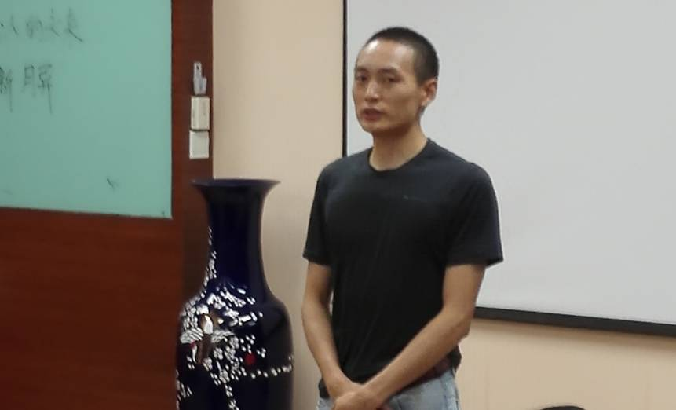
然后，来自360的高技术人才陆读羚，分享了自己对于机器人与基因的理解，并用自然的演讲风格征服了大家，一举摘得最佳即兴演讲者。
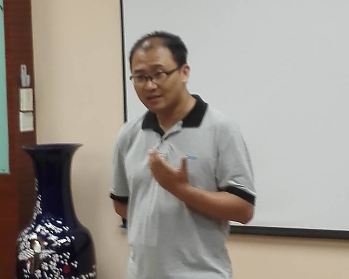
突然，画风突变，胡晨辉在纠结要不要去个机器人作妻子，生个机器人宝宝。答案是No，比较成本太高呀！
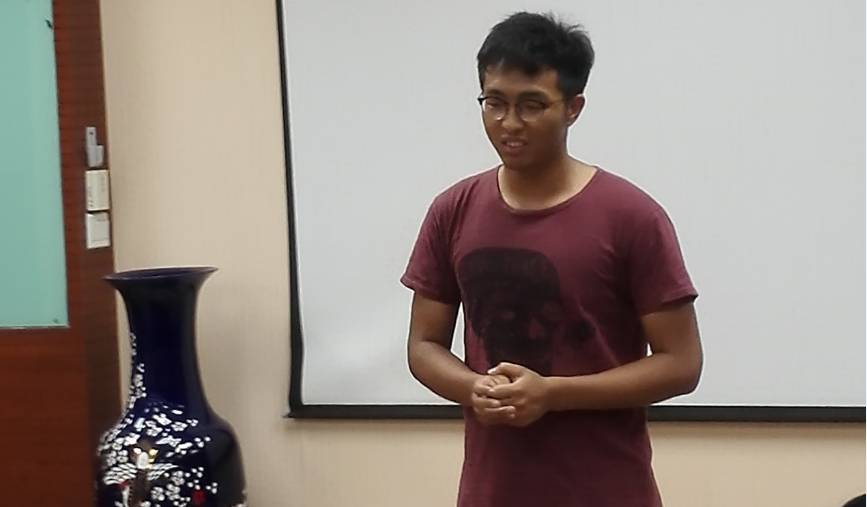
最后，黄燕婷阐述了自己对人与机器人的关系的理解，现在机器人还是奴隶，但以后我们会是好朋友，一起愉快地玩耍儿……呀呀呀，想想就期待。
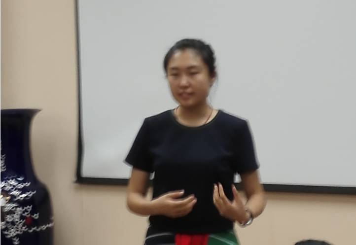
这周我们迎来的是朱泰伯，朱玉雪，以及任一芳的精彩演讲。
首先，朱泰伯分享了自己的创业经历，阐述了自己对创业者的理解，并用自己的经历告诫大家：创业不仅需要储备足够多的鸡血，更重要的是，用这些鸡血滋养兴趣的种子。为自己喜欢的事情奋斗，热情才会变成助推的才情。
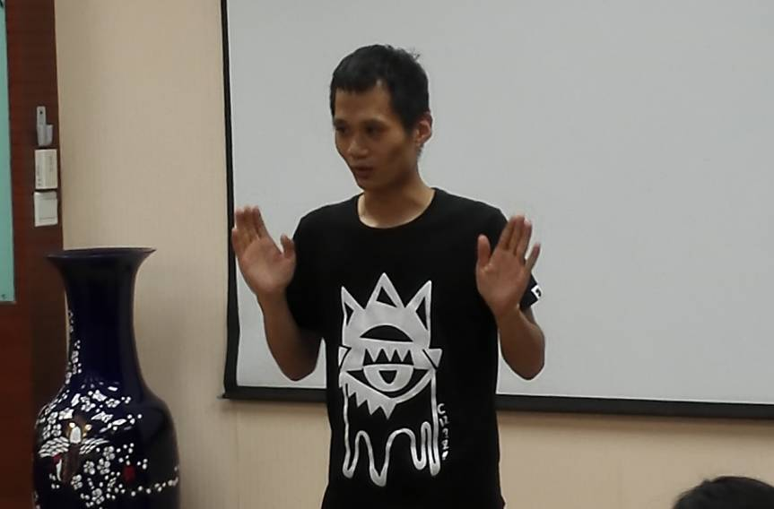
听过了朱泰伯创业的艰辛，朱玉雪的CC6给大家送上了治愈系的故事。父母是人生的港湾，有时也是人生的一个枷锁，在玉雪的故事中，主人公就被锁在父母过度的爱里，感觉自己像一只被囚禁的怪物。想要挣脱的愿望在心理日益增长，痛苦也随之增加。可成长就是如此，在痛苦中觉醒，觉醒后才能遇见更好的自己。听完玉雪的故事，很想走过去抱抱那个小女孩，然后对她说：你做到了，真棒！
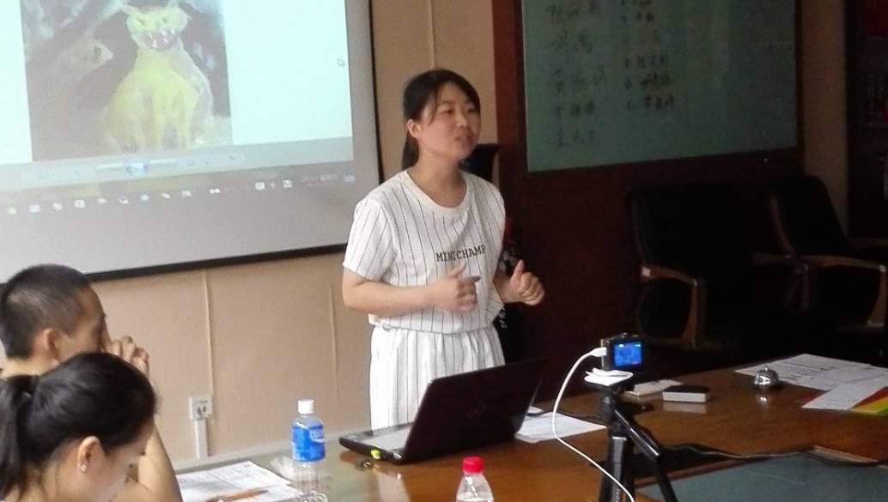
鸡汤喝够了，再来一捧狗粮。星火的当家花旦任一方在CC6中分享了她和她“男朋友”从相知到相恋的幸福故事，让人听得好生羡慕，跪求这样的男友/女友请来一打。可听到最后才知道，这位恋人不是别人，正是咱们的头马呀。嘻嘻，我们大家共享一位恋人，我们也是彼此的恋人。亲爱的们，记得每周五的约定哟。
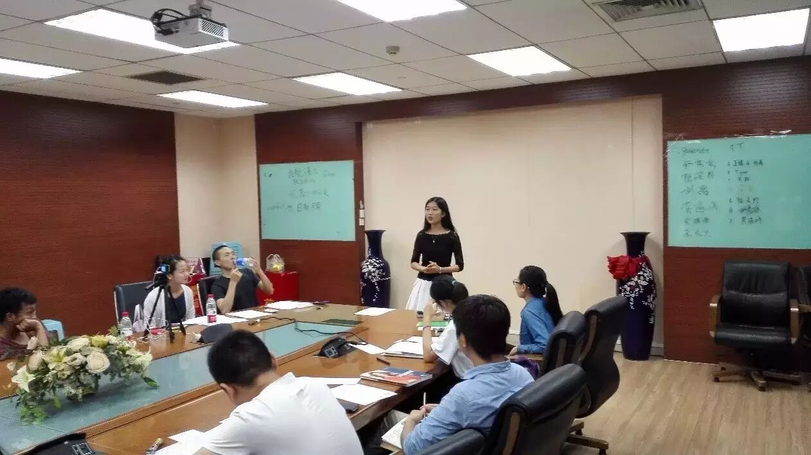

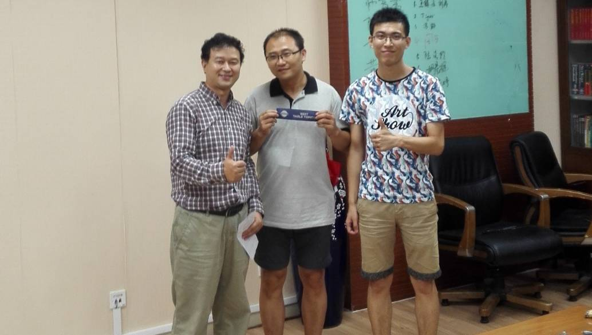
首先是来自360的宾客陆读羚用专业的知识与
自然的演讲风格征服了观众，拿下最佳即兴演讲者。
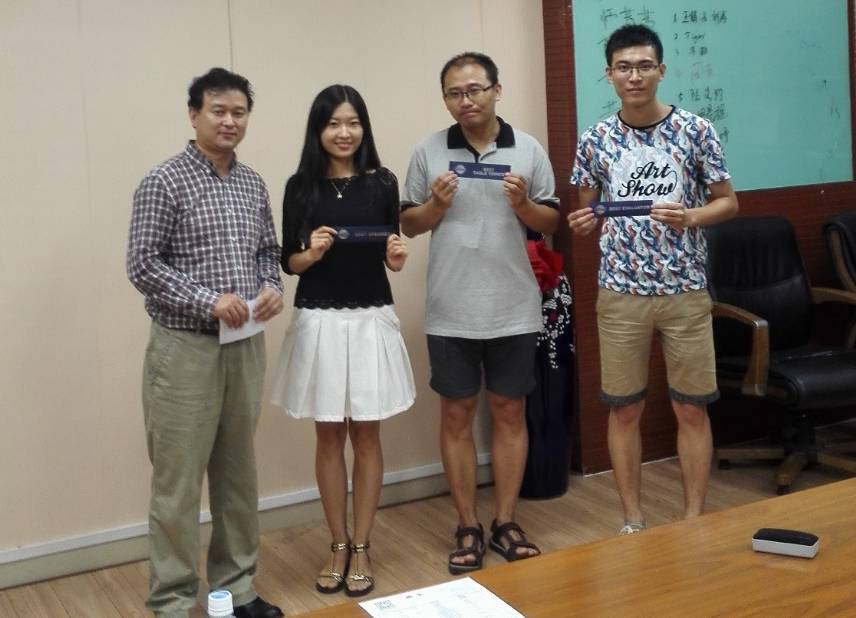
然后是聪慧美丽又有范的一芳
用一把狗粮换来了最佳备稿演讲者的荣誉，
哈哈，这样的狗粮请多来几碗！
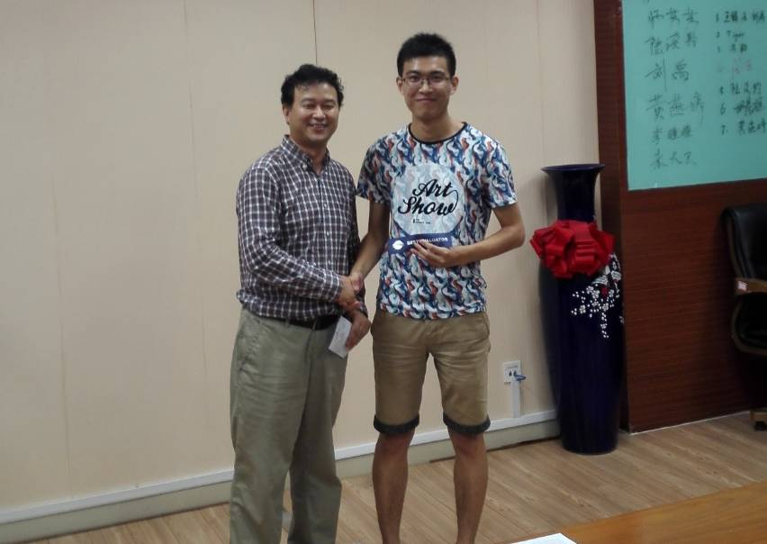
最后，
北航前前主席博文从星火主席手中接过了最佳评论官的荣誉
这画面，怎么有点像两国建交呢？
不能更和谐了
哈哈。
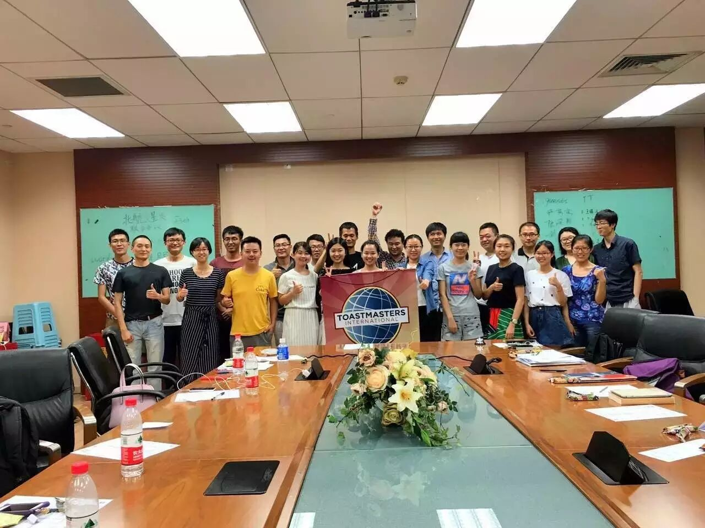
https://mp.weixin.qq.com/s/2iVO2ljha_KpHTNW8fgPSw
本页为抢救式本地归档，图文已永久保存。